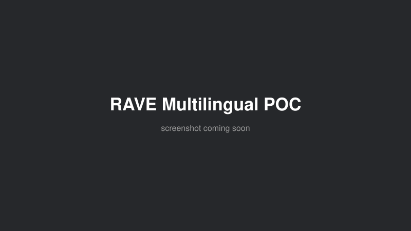

A proof of concept training IRCAM's RAVE (Realtime Audio Variational autoEncoder) — a neural
audio codec increasingly used in electronic music and sound installations — on multilingual
voice recordings, entirely locally on a single GPU. The pipeline chunks 16kHz mono audio into
8.192-second windows, trains via the RAVE CLI, and exports a TorchScript model that drops
straight into Max/MSP, SuperCollider or PureData for real-time inference. Trained for
300,000 steps (~16 hours) on about 27.5 minutes of source audio, reaching a reconstruction MSE
of 0.00135 — while surfacing and patching five bugs in the upstream acids-rave
package along the way (flag parsing, lazy loading, channel initialization, validation length
mismatches, sample-rate metadata).
